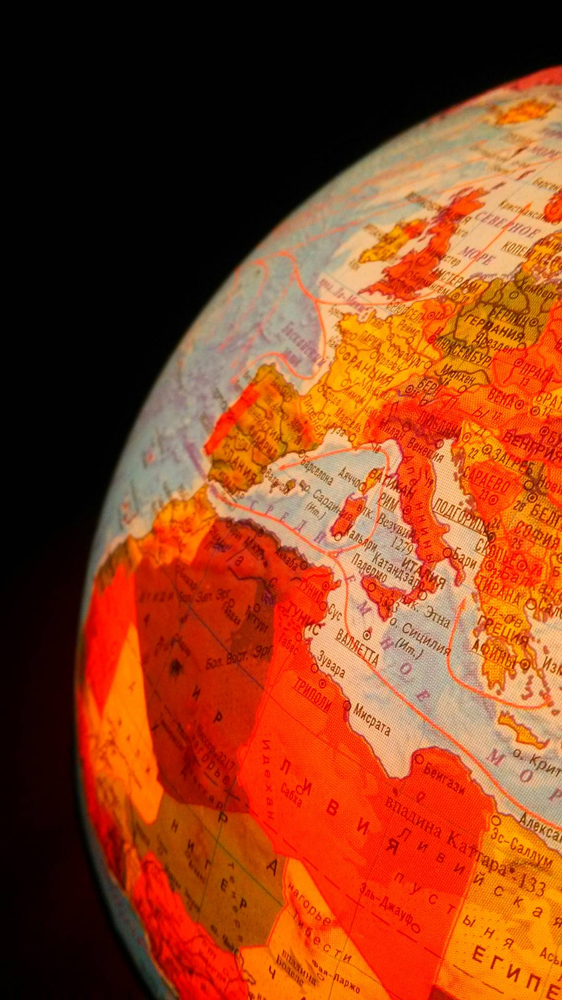
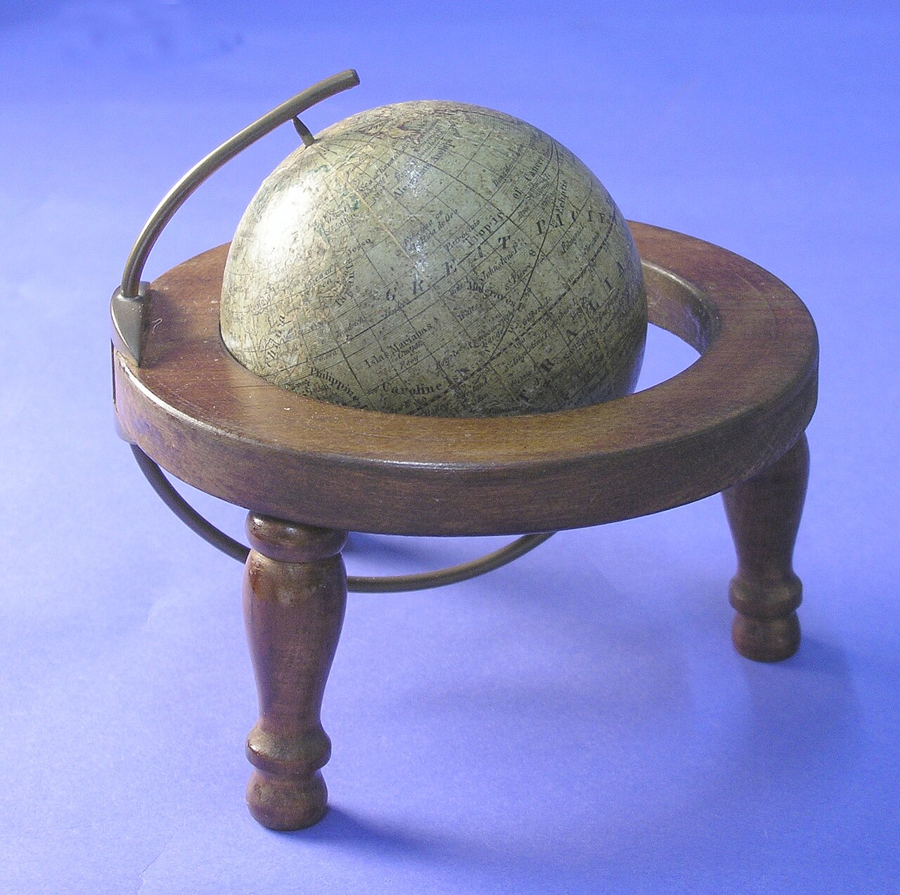

ФІЗИЧНИЙ
Рельєф і природні об’єкти
Кольорами та підписами показує океани, рівнини, гори, річки. Часто має гіпсометричне забарвлення.
Не просто «куля на підставці». Сьогодні глобус працює як модель: ми з’ясуємо, що він показує краще за карту, як читаються умовні знаки та як визначати напрям, коли поверхня перед нами сферична.

Спочатку рішення, потім теорія.

Чому глобус корисніший за пласку карту, коли треба порівнювати взаємне положення материків?
Модель змінюється під задачу дослідника.
Кольорами та підписами показує океани, рівнини, гори, річки. Часто має гіпсометричне забарвлення.

Політичний глобус підкреслює держави й столиці; історичний показує уявлення та кордони певної епохи.
Наприклад, клімат, океанічні течії, населення, тектонічні плити або нічне освітлення Землі.
Покрутіть модель і знайдіть елементи, без яких вона перестає бути географічно корисною.
Вісь проходить через полюси. Екватор ділить Землю на Північну й Південну півкулі. Паралелі й меридіани створюють градусну сітку.
Колір не декор — це спосіб ущільнити інформацію.
На політичному глобусі Україна зелена, а сусідня держава жовта. Чи означає це, що Україна нижча за висотою?
На глобусі «вгору» не означає «на північ». Північ визначається напрямом до Північного полюса.
Алгоритм: уздовж меридіана — Пн/Пд; уздовж паралелі — Сх/Зх. Схід — у бік зростання довготи E, захід — у бік W.
Не просто дайте відповідь — поясніть модель.
C — Claim: сформулюйте тезу. E — Evidence: наведіть щонайменше 2 докази з уроку. R — Reasoning: поясніть, як докази підтримують тезу.
Подивіться на глобус як на модель планети, а не як на сувенір.
Після перегляду назвіть одну властивість Землі, яку легше пояснити глобусом, ніж пласкою картою.
§6 + власне спостереження.
Оберіть на глобусі/Google Earth дві точки на одному материку. Запишіть приблизний напрям від першої до другої і поясніть його через полюси/паралелі.
Передивіться відеофрагмент уроку та сформулюйте одну різницю між глобусом і картою, яку ви раніше не помічали.
Відео →Спочатку введіть ім’я, прізвище та клас.